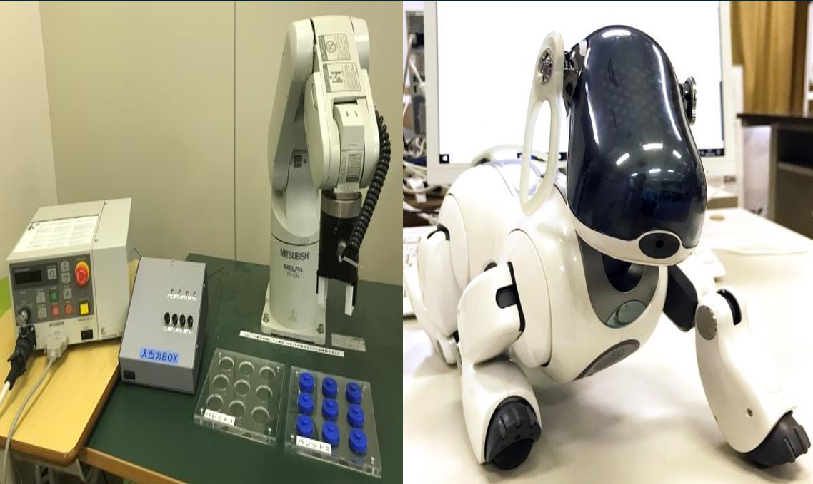

技術・ものづくり
オシロスコープなどの電子計測機器、3Dプリンタ、ロボットアームなど、高専ならではの充実した設備を使い、実験・制作活動を通して実践的な技術を身につけます。3年次には電気回路の実験と自主制作、4年次には電子制御総合実験として電気・電子系、情報系、機械系から2テーマを選択し、より高度な実験技術を学びます。
電子制御工学科は、電気・電子、情報、機械という3つの分野を横断的に学べる融合学科です。ロボット技術やIoTなど、分野の壁を越えた統合的な知識と実践力を、5年間のカリキュラムを通して身につけます。卒業後は、電気・電子、情報・通信、機械をはじめ、業種・職種を問わず幅広い分野で卒業生が活躍しています。
設計、ものづくり、情報、表現など複数の分野を横断しながら、課題を発見し、試作し、検証する力を育てます。電気・電子系ではArduinoなどのマイコンボードを用いた電子回路、情報系ではC言語などを用いたプログラミング、機械系では旋盤やフライス盤を用いた機械要素の加工を、1年次から段階的に学んでいきます。
もっと詳しく電子制御工学科を知りたい方は岐阜高専 学科紹介から!!

オシロスコープなどの電子計測機器、3Dプリンタ、ロボットアームなど、高専ならではの充実した設備を使い、実験・制作活動を通して実践的な技術を身につけます。3年次には電気回路の実験と自主制作、4年次には電子制御総合実験として電気・電子系、情報系、機械系から2テーマを選択し、より高度な実験技術を学びます。